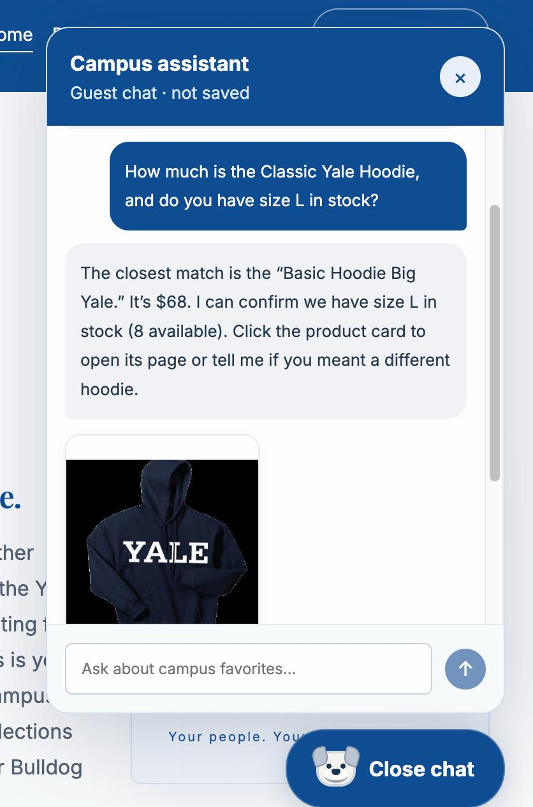
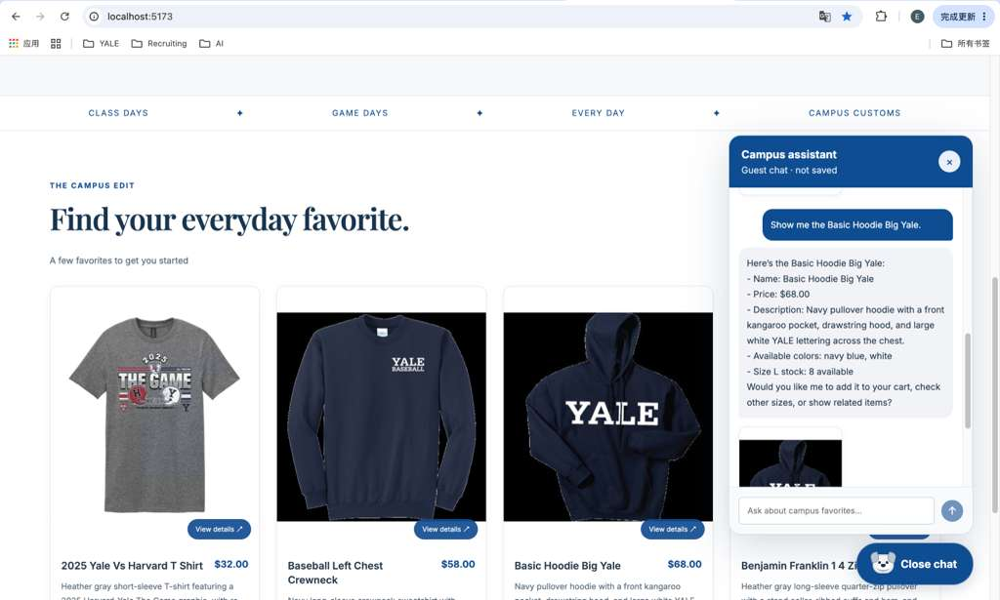
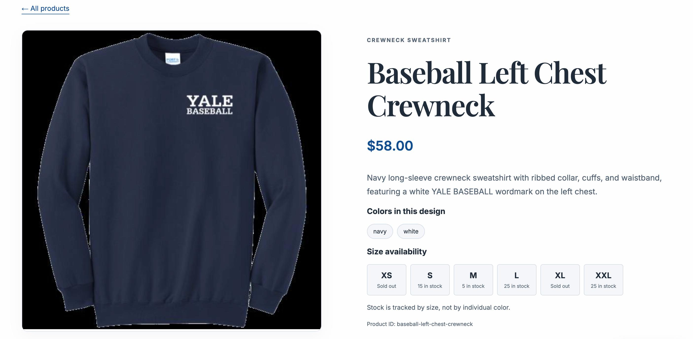

Status: screenshot files attached; captions require final review. This is an evidence template, not a completed test report. Confirm that each attached image supports its caption before submission.
1. Database-backed inventory and pricing
Test: Ask the chat for the price and XS inventory of the Baseball Left Chest Crewneck, then compare its answer with the current catalogue and inventory records. Capture the response and the database comparison together if possible.

2. Dynamic category-search product cards
Test: Ask “What hoodies do you have?” and capture the question with the matching product cards. Also click a card to verify that it opens the corresponding single-item page; that navigation needs a separate manual check.

3. Out of Stock visual badge
Test: Capture a product card whose inventory totals zero across all recorded sizes. If the live database has no such item, use an isolated test database with an all-zero product rather than changing real stock just for the screenshot.

Save the images beside this report in app_check_images/ as inventory.png.jpeg, dynamic_cards.png.jpeg, and usability_out_of_stock_badge.png.jpeg.